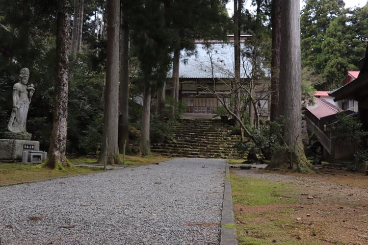

ZENIT ARCHIVE
2019/04/14 ZenIT Workshop @ Eiheiji - Blog Post
Apr 16, 2019
当日の参加者 / Participants
吉峰寺 / Kippouji Temple
今回の禅ITのワークショップは、桜の一番綺麗な季節で、道元禅師が大本山永平寺に立ち上げる前に修行された吉峰寺と永平寺町魅力発信交流施設えい坊館で行われました。参加者は福井、京都、そして東京からも来て下さいました！（イベント詳細ページ）
This time’s ZenIT workshop happened at Kippouji, the temple Dogen Zenji studied at before establishing Eiheiji, and Eiboukan, Eiheiji town’s cultural exchange establishment. On top of that, it was in the most beautiful season for Sakura! Participants came from across Japan, including Tokyo, Kyoto, and Fukui. (Event page)
まずはみんながバスで吉峰寺まで移動しながら、あみる氏からの禅ITの説明を聞きました。その後は山に登って、吉峰寺のお坊さんからお寺の拝観と座禅の説明を受けてから、25分間の座禅をしました。そこでウェブデザイナーのCanyonさんからの質問があって、「坐禅中に鼻が痒くなったらどうすればいい」。その答えは？「呼吸に集中しなさい」でした！最後にみんなと山を登って道元禅師が修行の時に使用した座禅石を案内していただきました。（吉峰寺の説明）
To start, we went by bus to Kippouji temple, while hearing Amil explain ZenIT. Arriving on top of the mountain, we were given a guided tour of Kippouji by the resident monks and were led through a 25-minute Zazen meditation experience. In the Q&A sessions, web designer Canyon asked “what should we do if our nose gets itchy during Zazen?” The answer? “Focus on your breathing!” At the end, everybody walked further up the mountain and learned about the Zazen stone which Dogen Zenji had used.
バスの中での会話 / Conversation within the bus
お寺の拝観中の参加者 / Participants in the temple tour
その後はバスでえい坊館に戻って、動物性は一切入っていない精進料理をいただきました。今回は禅の体験でしたので「無言」でいただきました。日頃の生活では、なかなかできない感謝の気持ちで、瞑想に近い食べ方をしました。後は料理の中にえい坊館の特別な春らしいの桜あんの水ようかんも入っていました！
After that, we returned to Eiboukan by bus and had a Buddhist vegan meal (Shojin-ryouri). Because this was a Zen experience, we ate silently (Mubon). We got a rare experience of eating a meal in a way similar to meditation. Also, we had a taste of Eiboukan’s special Spring-themed Sakura jelly bean paste (Mizu-youkan)!
無言で食べている姿 / Eating in silence
えい坊館スペシャル精進料理のメニュー / Eiboukan’s special Shojin-ryouri menu
その後はデザイナーのCanyon氏とプログラマーのあみる氏による、ペアワークのプログラミング教室に入りました。初めに、Canyon氏が実際に使用しているPivotal社のペアプログラミングとテスト駆動開発（Test-driven development）の説明をしました。その後は、Canyon氏とあみる氏が生徒さんにJS Binを利用して、果物の色を区別する簡単なHTMLとJavaScriptのウェブページの作り方を教えました。多くの生徒さんは全く初心者でしたが、お互いに教えたり学んだりしながらスムーズに進めるために、先輩・後輩のペアを組みました。ペアの交換を何回もすることで、ペアワークの良さも表現できました（学び合いの加速、緊急対応、友達作成、楽しいい仕事）！
Next, we started the programming workshop taught in pair style by Canyon (designer) and Amil (developer). First, Canyon gave an overview of how pair programming and test-driven development is practiced at Pivotal, where both he and Amil work. After that Canyon and Amil walked students through a basic HTML/JavaScript web page for determining the colors of fruits using JS Bin. Most of the students were total beginners to programming, but were assigned into pairs of junior/advanced so that each pair could make progress quickly while teaching other. We also rotated pairs many times, demonstrating the merits of pair work for speeding up learning, resilience to sudden changes, making friends, and enjoying the work!
もちろん、禅ITワークショップであるので座禅と休憩も混ぜ込み、目標だったJavaScriptのウェブページが完成しました。
Of course, this being a ZenIT workshop, Zazen meditation sessions and breaks were also intertwined, with the goal of the work itself becoming meditation!
ウェブサイトのJavaScriptコード / The website’s JavaScript code
ペアプログラミングの姿 / Participants pair programming
越前市から参加して下さったNさんの感想 / Comments from Echizen town’s N-san
「初めてのJavaScriptを体験。ゲーム感覚でペア同士でプログラミングができました。静かな時間やワイワイ楽しむ時間があり充実した講座でした。 」
“This was my first experience with JavaScript. We were able to program in pairs and it felt like playing a game. It was a fruitful class, with both times of serenity and joyful fun!“
福井大学国際地域学部の相原光貴さんの感想 / Comments from Fukui University International Studies student Koki Aihara-san
「今回は2回目の禅IT参加でしたが、前回とは違うプログラミングの体験や新しい参加者との交流など、新たな体験ばかりでした。ITやプログラミングは今後欠かせないものだと思うので、禅ITを通して時代に取り残されないように励みたいです。 また、次回も参加したいです。」
“This was my second ZenIT workshop. This time I had a different programming experience and was able to interact with new people, so it was a whole new experience. I think programming will be indispensable from now on. Through ZenIT, I will try my best to not be left behind by the new age! I definitely want to participant next time again!“
参加者のペア・アンケートからの感想 / Thoughts from a participant survey filled out by a pair
「多様な参加者、和気あいあいとした雰囲気。教えることは学ぶことだと実感できたのが良かったです。朝の座禅が希少な場所で経験できて本当に良かったです。 」
“Diverse participants, harmonious atmosphere. I was glad to experience that teaching is learning. Also, I was very happy to do our morning meditation at a sacred place.“
シリコンバレーから教えに来たあみる氏の感想
「今までは１０回以上のワークショップをやりましたが、今回は一番良かったです！準備にものすごくたくさんの時間とエネルギーをかけたけど数人の福井人の協力でイベントのロジスティクスと宣伝ができました。自分の中で禅のITの知識を増やせば増やすほど、静かな状態を持ちながら心豊かにペアワークできる、本当の禅ITに近づいていると思います。」
“We’ve done more than 10 workshops, but this was the best one yet! We spent a lot of time and energy in preparation, but were very fortunate to have a team of several people in Fukui to arrange the event logistics and advertise it. As I increase my knowledge in Zen and IT, I feel that we are coming closer to the real ZenIT, where practitioners maintain inner peace while having fun pairing!”
イベント宣伝協力 / Parties who helped advertise the event!
ご協力はどうもありがとうございました！ Thank you for your support!
FM福井｜76.1MHz - FM Fukui Radio Station
たんなん夢レディオ｜79.1MHz - Tannan FM Radio Station
永平寺町役場 - Eiheiji Town Office
福井ゲストハウスSAMMIE'S - Fukui Guest House SAMMIE’s
芭里音｜蔵カフェ｜バリノン - Barinon Cafe
清涼山 天龍寺 - Tenryuuji Temple
えい坊館 - Eiboukan
クロスポスト / Cross Posts
Teteの日常会話 | 禅×IT プログラミング教室
Post not marked as liked
Recent Posts
See All
2019/12/15 ZenIT Workshop @ Tenryuuji - Blog Post
26
0
Post not marked as liked
University of Fukui Students Learn About the Silicon Valley and ZenIT
10
0
Post not marked as liked
Successful ZenIT Planning Workshop!
8
0
Post not marked as liked

